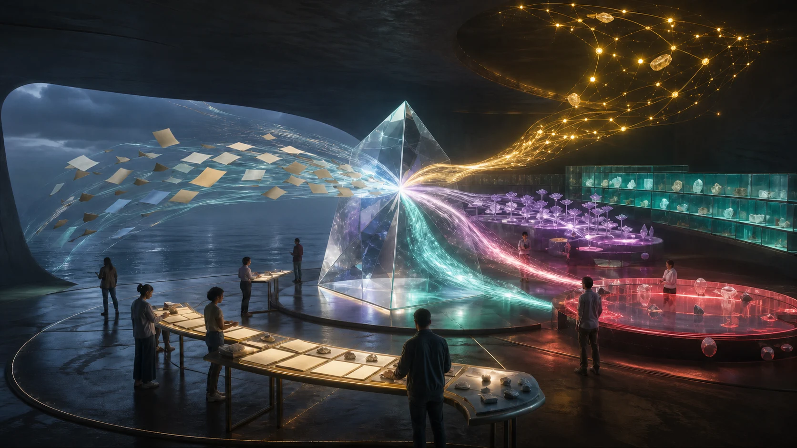

Established information
Current public records tied to a named source and date.
Established information
The supplied plans bring together research directions, public records, artistic meaning and ambitious regional ideas. This page shows where each thread begins and how shared learning could deepen it.
Imagined concept artwork
The supplied files bring submissions, business plans, research pathways, architectural ideas, lyrics and supporting data into one conversation. Their different strengths help shape future experiments, practical partnerships and clearer public choices.
Author clarifications add depth to the album meaning, Aura Matrix Studio and the status of the planned Geode trial.
Current public records tied to a named source and date.
Established informationAn idea with visible assumptions, relationships and room to change.
Working proposalA promising construction, engineering, health, software or social question with room for a defined study.
Future researchA product, partner, cost, jurisdiction, permission or version for the people involved to name together.
Locally shapedThese links give the Queensland starting context a public record beyond the project drafts.
The drafts offer more than one route in several places. Each choice invites a source check, design comparison or local conversation.
The person's own experience runs through each path. Their purposes, equipment and study questions remain distinct.
An emerging public, non-clinical way to organise personal keywords, records and self-reflection for use with different artificial intelligence systems.
Public reflection processThe supplied clinical pathway sketches a separate software study with people living with dementia and their carers: first usability, then a pilot, then a wider comparison. Quality of life, daily function and carer experience are proposed measures.
Clinical software study planThe chamber and Personal Atmosphere Delivery System have their own engineering path: material and pressure tests, breathing-supply design, participant experience and a future clinical study.
Device and human-study planShared ground, design alternatives, public research links and choices for later work.
Open the auditLuke's dated explanations where an earlier reading missed the intended meaning.
Open the clarificationsHow the Geode, wider therapies and the separate clinical software plan meet published studies and possible methods.
Open the research reviewA source update, product record, local review or author clarification may change a page. Repository history preserves the earlier draft alongside the public learning that followed.
Share a sourced correction